Cucina
Pesce, pizza e piatti liguri pensati per una pausa di gusto a Bogliasco.
Il Clipper · Ristorante
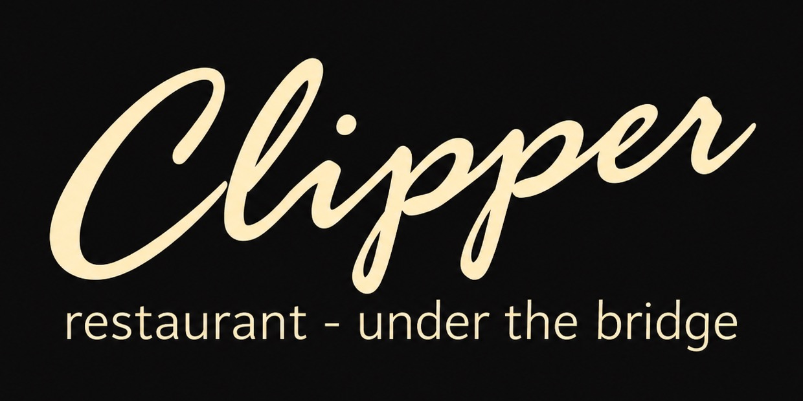
Ristorante - Pizzeria
Bogliasco
Golfo Paradiso
PRANZO, CENA & CONVIVIALITA' CUCINA LIGURE - PESCE - PIZZA - VINI
01 Ristorante
Cucina ligure, specialita' di mare e pizza in un ristorante accogliente nel cuore di Bogliasco.
Una tavola semplice, curata e conviviale per pranzo, cena e serate sul Golfo Paradiso.
Cucina ligure, pesce e pizza nel cuore di Bogliasco.
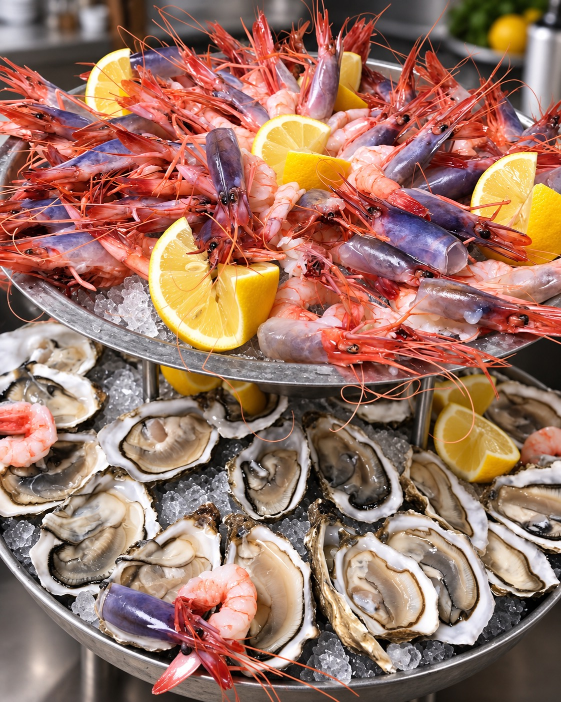
Plateau di mare
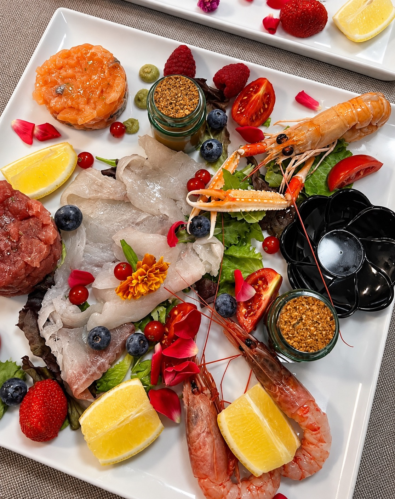
Crudo di mare
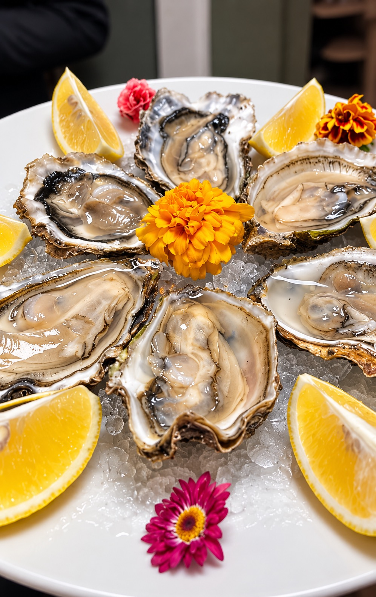
Ostriche e limone
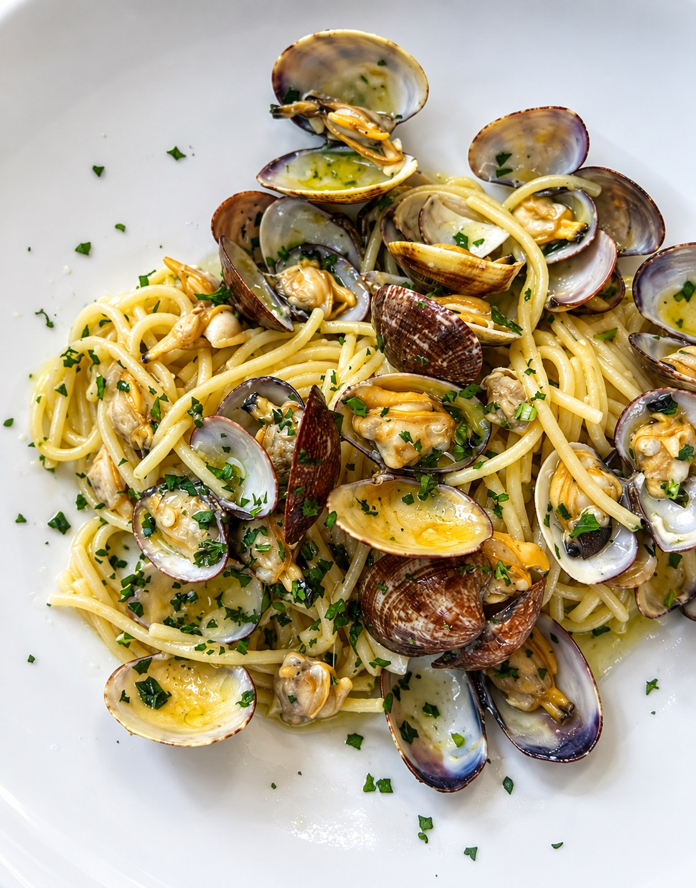
Spaghetti alle vongole
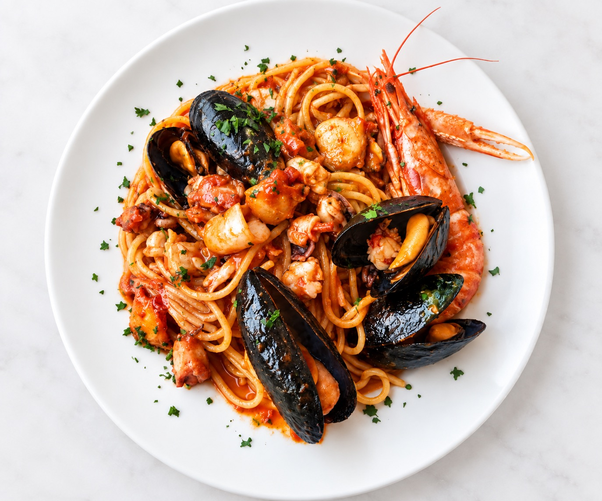
Spaghetti allo scoglio
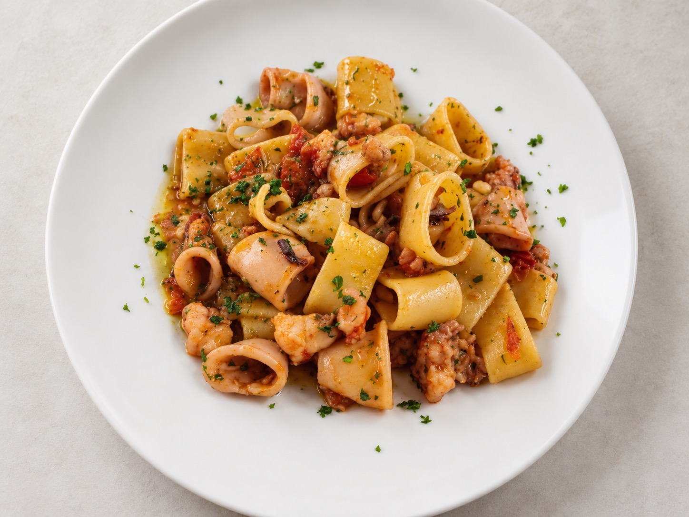
Calamarata di mare
02 Location
Via dei Mille 3, nel centro di Bogliasco, a pochi passi dal mare e dal borgo.
Sala, atmosfera informale e accoglienza ligure per una pausa dopo il mare o una cena in Riviera.
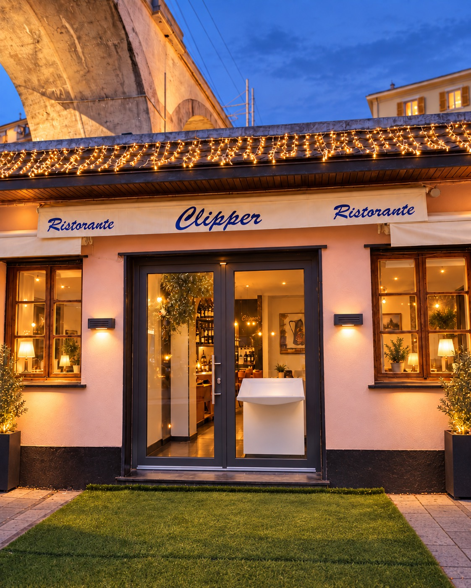
L'ingresso
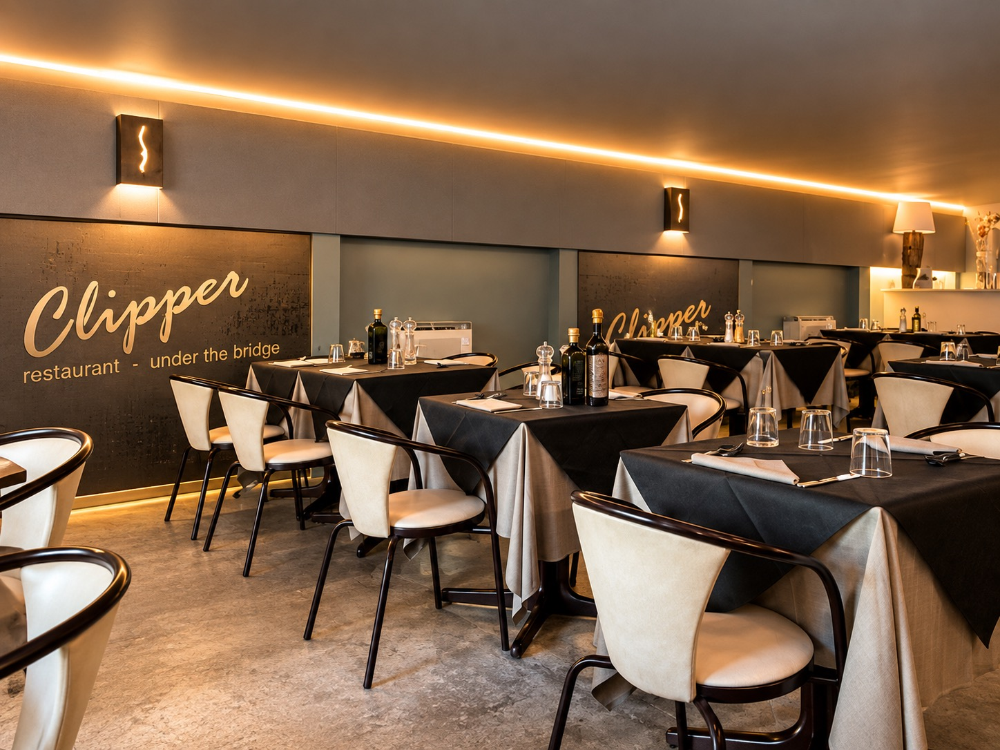
La sala
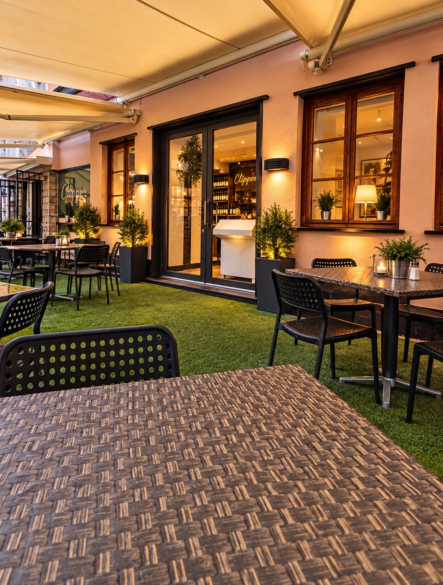
Il dehor
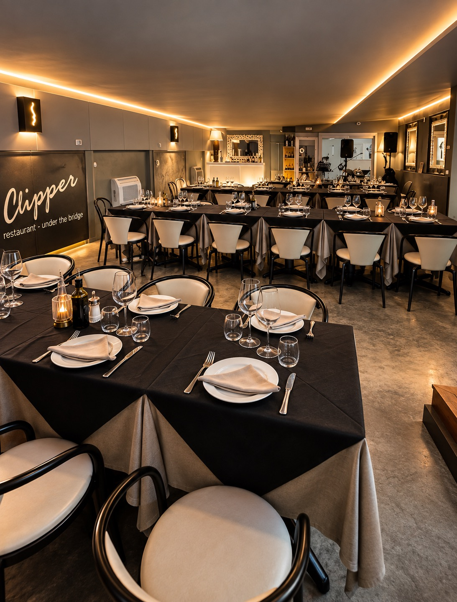
La sala eventi
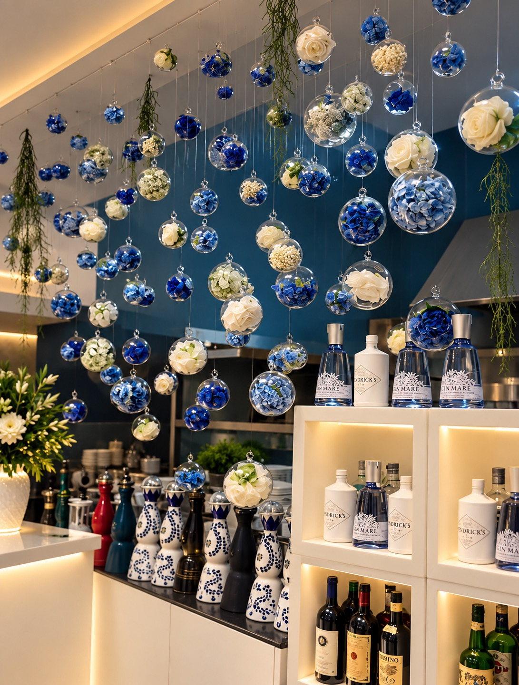
I dettagli
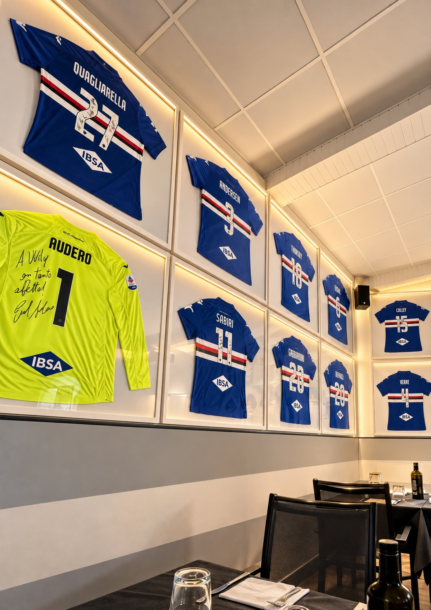
La parete Sampdoria
03 Recensioni
Pesce, pizza e piatti liguri pensati per una pausa di gusto a Bogliasco.
Il Clipper · Ristorante
Servizio diretto, ambiente conviviale e tavoli pronti per pranzo e cena.
Bogliasco · GE
Una tappa semplice e generosa tra mare, borgo e profumi della Riviera ligure.
Via dei Mille 3